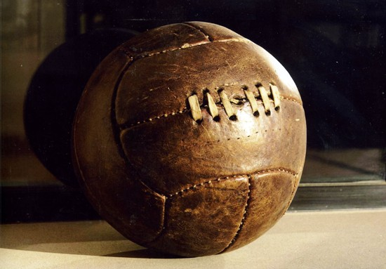

REALIZZAZIONE:
Inizialmente i palloni da calcio avevano una forma piuttosto irregolare e venivano ricavati dalle vesciche dei maiali;
successivamente, a partire dal XX secolo, fu adoperata una camera d'aria interna in gomma, ricoperta da 12 strisce di cuoio non
impermeabili (in modo da mantenere inalterata la forma, simile a quella di un moderno pallone da pallavolo),
le quali venivano legate tra loro in maniera tale da poter consentire il passaggio dell'aria all'interno
della camera durante il gonfiaggio.
La maggior parte dei palloni moderni è composta da 32 pannelli di cuoio (o plastica) impermeabile, di cui 12 pentagonali
e 20 esagonali. La configurazione a 32 pannelli è basata sulla forma dell'icosaedro troncato ed è sferica poiché i pannelli
(cuciti tra di loro) si gonfiano a causa della pressione dell'aria interna. Il primo pallone realizzato in questo modo fu
commercializzato da Select negli anni cinquanta in Danimarca Questa configurazione divenne d'uso comune nell'Europa continentale negli anni
sessanta e venne pubblicizzata a livello mondiale grazie a Telstar, il pallone ufficiale del campionato del mondo 1970
campionato del mondo 1970 prodotto da Adidas.
A partire dal 2004, con la produzione da parte di Adidas di Roteiro, il pallone ufficiale del Campionato europeo di calcio 2004,
il primo al mondo con pannelli saldati termicamente, vengono realizzati anche palloni da calcio senza cuciture.
A partire dal 2006 è stata abbandonata la forma a 32 pannelli.
